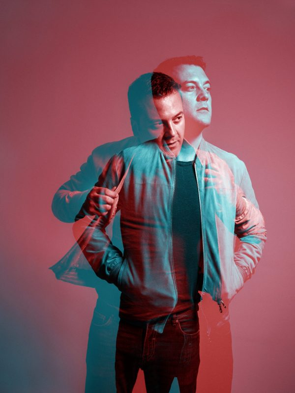
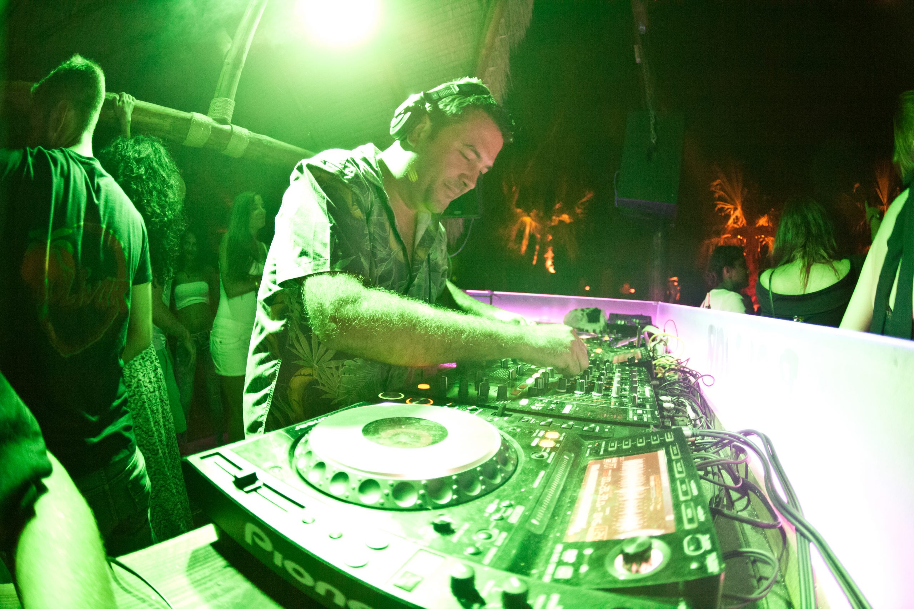

KIKO NAVARRO
BIOGRAPHY
Carving out an enviable reputation across the globe for his distinctive and highly personal brand of House music, Kiko Navarro's voyage of sonic discovery has been going strong for almost three decades now.
Born in Mallorca, Kiko's sound reflects the sun-drenched, slow living atmosphere of the Balearic island he still calls home...
Continue reading
NEW ALBUM
SOUNDS OF MY BREATH
Afroterraneo Music 2022
MUSIC PODCAST
UPCOMING SHOWS
-
20 JUNSES COVETES, MALLORCA ES S'EMBAT ACOUSTIC FEST 22:00
-
26 JUNCAP VERMELL, MALLORCA ES AFROTERRANEO LIVE 22:00
-
27 JUNSES COVETES, MALLORCA ES S'EMBAT ACOUSTIC FEST 22:00
"MUSIC FEELING"
Carving out an enviable reputation across the globe for his distinctive and highly personal brand of House music, Kiko Navarro's voyage of sonic discovery has been going strong for almost three decades.
Will Sumsuch (5 Magazine, Chicago)
Gallery
